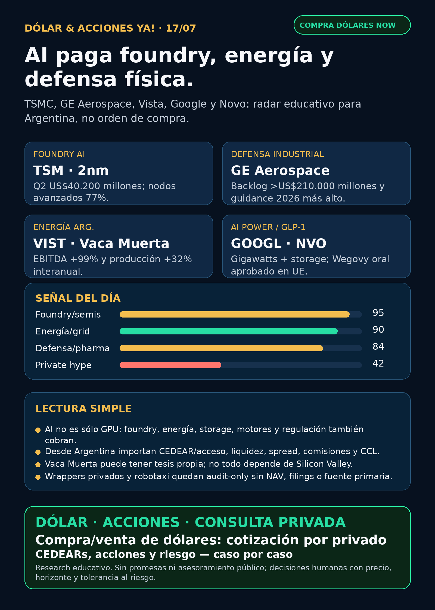

AI también paga foundry, energía y defensa física.
TSMC mostró Q2 fuerte; GE Aerospace y Vista aportan moats fuera del software; Google y Novo confirman energía y pharma como carriles reales.
Texto WhatsApp
Placa del día

Dólar & Acciones YA — 17/07
Fecha de edición: 2026-07-17. Research educativo para Argentina. No es recomendación personalizada de compra o venta.
Lectura simple del día
La lectura de hoy es clara: la inteligencia artificial ya no se mira sólo por NVIDIA o por software. El peaje se reparte entre foundries avanzadas, litografía, energía, red eléctrica, storage, motores aeroespaciales, defensa física, Vaca Muerta y pharma regulada.
En criollo: para que la AI funcione alguien fabrica el chip, alguien alimenta el data center, alguien mantiene la infraestructura física y alguien captura mercados reales como GLP-1 o energía. Pero buena empresa no significa automáticamente buena inversión al precio actual, buen CEDEAR local ni buen tamaño dentro de una cartera.
Contexto dólar público usado sólo como referencia educativa: BlueLytics marcó oficial vendedor ARS 1.496 y blue vendedor ARS 1.525 con timestamp 2026-07-16 19:45 -03. CriptoYa marcó MEP AL30 ARS 1.503,36 y CCL AL30 ARS 1.610,57 con timestamp 2026-07-16 16:59 -03; USDT ask aproximado ARS 1.568,495 a las 22:01 -03. Para operar de verdad se confirma en broker vivo.
Ordenado por valor educativo y fuerza de señal de radar, no por recomendación de compra.
Tesis central
La señal central del día es que el trade de AI se ensancha. TSMC mostró que la foundry avanzada sigue capturando demanda de chips; Google está comprando generación y baterías a escala gigawatt; GE Aerospace recuerda que defensa y guerra física también tienen moats industriales; y Vista mete energía argentina con fundamentos propios.
Señales educativas del día
1) AI foundry / semiconductores — TSMC (`TSM`)
- **Qué pasó:** TSMC presentó 6-K del 16/7 con resultados Q2 2026 y guidance Q3.
- **Dato clave:** revenue consolidado **US$40.200 millones** / NT$1.270,38 mil millones; net income NT$706,56 mil millones; revenue +36,0% interanual; EPS +77,4%; gross margin 67,7%; operating margin 60,3%. Los nodos avanzados fueron **77%** del wafer revenue: 3nm 30%, 5nm 33%, 7nm 11% y 2nm ya 3%. Guidance Q3: **US$44.600–45.800 millones**.
- **Fuente primaria:** SEC 6-K exhibit: https://www.sec.gov/Archives/edgar/data/1046179/000104617926000451/a2q26e_withguidancexfinal.htm
- **Lectura en criollo:** si NVIDIA, Apple, Google, Broadcom o AMD quieren mejores chips, TSMC cobra por fabricarlos. Es un peaje físico de AI.
- **Accionable Argentina:** revisar CEDEAR/acceso local, liquidez, spread y CCL implícito. Vía global/USA suele ser más directa, pero igual requiere precio, valuación, horizonte y riesgo geopolítico.
- **Estado:** señal fortalecida / en radar.
2) Defensa / aerospace industrial — GE Aerospace (`GE`)
- **Qué pasó:** GE Aerospace reportó Q2 2026 y subió guidance anual.
- **Dato clave:** orders **US$16.500 millones** (+17%), revenue **US$13.300 millones** (+21%), free cash flow **US$3.000 millones** (+43%), backlog **más de US$210.000 millones**. Guidance 2026 sube a operating profit **US$10.550–10.750 millones** y FCF **US$8.900–9.200 millones**. También marcó wins de defensa: F404 para Turkish Aerospace HÜRJET, CT7 para UK Ministry of Defence y GE426 para USAF Autonomous Collaborative Platform.
- **Fuente primaria:** SEC 8-K exhibit: https://www.sec.gov/Archives/edgar/data/40545/000004054526000047/ge2q2026earningsrelease.htm
- **Lectura en criollo:** defensa no es sólo drones high-beta. Motores, mantenimiento, backlog, servicios y programas militares también son moat industrial.
- **Accionable Argentina:** no asumir CEDEAR o buena liquidez local sin verificar. Para cuenta global, mirar precio, múltiplos, supply chain y tamaño.
- **Estado:** señal fortalecida / en radar.
3) Energía Argentina / Vaca Muerta — Vista Energy (`VIST`)
- **Qué pasó:** Vista presentó Q2 2026 vía SEC 6-K.
- **Dato clave:** producción **156.061 boe/d** (+32% interanual), oil production 135.427 bbl/d (+33%), revenue **US$1.154 millones** (+89%), exports **US$737,7 millones**, adjusted EBITDA **US$805,2 millones** (+99%), net income **US$321,7 millones** y FCF **US$99,1 millones**.
- **Fuente primaria:** SEC 6-K exhibit: https://www.sec.gov/Archives/edgar/data/1762506/000119312526306139/d151775dex1.htm
- **Lectura en criollo:** Vaca Muerta puede ser tesis propia, no sólo “energía por AI”. Exportaciones, costo de lifting, capex y precio del petróleo importan.
- **Accionable Argentina:** VIST tiene acceso más directo que muchos proxies globales, pero igual exige revisar precio, liquidez, spread, riesgo país, petróleo y tamaño de posición.
- **Estado:** señal fortalecida / en radar.
4) AI power / hyperscaler energy — Google Steel River (`GOOGL`)
- **Qué pasó:** Google anunció avance en Steel River Energy Center, Arkansas, con Cypress Creek.
- **Dato clave:** Google será anchor investor y offtaker. Primeras fases: **1,6 GWdc** solar y **1,9 GWh** de battery storage. Proyecto completo hacia 2029: **2,5 GWdc** solar y **2,9 GWh** de storage.
- **Fuente primaria:** Google Blog: https://blog.google/innovation-and-ai/infrastructure-and-cloud/global-network/steel-river-arkansas/
- **Lectura en criollo:** AI no se escala sólo comprando GPU. Los hyperscalers están cerrando energía y baterías a escala utility.
- **Accionable Argentina:** GOOGL global/CEDEAR puede dar exposición indirecta; energéticas locales son proxy imperfecto, no equivalente.
- **Estado:** fortalece tesis AI power / vigilar.
5) Pharma / GLP-1 — Novo Nordisk (`NVO`) Wegovy oral en Europa
- **Qué pasó:** Novo Nordisk anunció aprobación de la Comisión Europea para Wegovy pill oral 25 mg como primer GLP-1 oral para weight management en la UE; también aprobó pen 7,2 mg.
- **Dato clave:** OASIS 4 mostró pérdida media de peso de aproximadamente **17%** vs **3%** placebo con lifestyle intervention; cerca de un tercio logró al menos 20% de pérdida de peso. OpenFDA muestra que en EE.UU. Wegovy oral ya venía aprobado desde 2025; el evento fresco acá es Europa.
- **Fuente company/sindicada:** https://www.globenewswire.com/news-release/2026/07/15/3327953/0/en/novo-nordisk-receives-european-commission-approval-of-wegovy-pill-as-first-oral-glp-1-for-weight-management-in-the-eu-single-ready-to-use-pen-for-higher-dose-7-2-mg-also-approved.html
- **Lectura en criollo:** GLP-1 sigue siendo carril serio, pero no todo titular viral es catalyst nuevo. Hay que separar regulador/company de reciclaje de noticias.
- **Accionable Argentina:** NVO acceso local/CEDEAR a verificar; no convertir aprobación en orden de compra.
- **Estado:** señal fortalecida / vigilar competencia con LLY.
Watchlist base — seguimiento rápido
- RKLB: sin filing SEC nuevo material post-Iridium; sigue space/radar, pero no headline de hoy.
- NVDA: sin filing nuevo; señales indirectas por TSMC, Google energy y power hardware. Moat estructural vigente, sin catalyst propio fresco.
- PLTR: Form 144 del 15/7, sin señal operativa fuerte.
- TSM: señal fuerte del día.
- MU: memoria/HBM sigue en radar, pero hoy la evidencia de semis viene por TSMC/ASML.
- GOOGL/GOOG: Steel River fortalece la capa energética de AI.
- AAPL / AVGO: acuerdo custom silicon hasta 2031 sigue como tesis previa; sin novedad primaria nueva.
- HOOD: sin señal core fuerte; RVI sigue como instrumento empaquetado riesgoso.
- TSLA: robotaxi/NHTSA apareció en RSS, pero sin primaria usable. Audit-only.
- ASML: resultados Q2 del 15/7 siguen dentro de ventana y sostienen litografía/AI; hoy TSMC agregó señal foundry fresca.
- Gold / GLD / GOLD / B: instrumento ambiguo; no tocar precio ni tesis hasta confirmar si es ETF, minera, oro físico u otra cosa.
- RVI: Form 4 nuevo con sponsor sales; wrapper, no operating company.
- SNDK / CBRS: revisados sin filing nuevo superior; mantener radar, no headline.
Energía y AI power
- **Generación / capacity markets:** VST y CEG siguen fuertes por subasta PJM 2028/2029: VST despejó 10.924,40 MW a USD 325/MW-d y CEG informó 18.875 MW, incluyendo 15.700 MW nucleares. No es novedad nueva de hoy, pero sigue tesis de la semana.
- **Energía Argentina:** VIST fue la señal principal. YPF tiene recompra de notes previa; PAMP, TGS y CEPU revisados sin señal nueva más fuerte.
- **Power hardware / transformadores:** siguen en radar Hitachi Energy, Siemens Energy (ENR.DE), GE Vernova (GEV), HD Hyundai Electric, Hyosung/HICO, Virginia Transformer y Delta Star. Señal fresca: LS Electric + Infineon para DC power, solid-state transformers y circuit breakers; Corea/Europa/global, no ejecución fácil Argentina sin verificar instrumento.
- **Lectura educativa:** el segundo peaje de AI incluye generación, interconexión, permisos, subestaciones, transformadores, breakers, DC power, baterías y regulación.
Pharma / salud
- NVO: Wegovy oral Europa es la señal GLP-1 fresca.
- PFE / Astellas / MRK: PADCEV + Keytruda sigue vigente por openFDA supplement 37 AP con fecha 20260710. Es oncology, no GLP-1.
- AZN: Zegfrovy/Dizal sigue vigente por 6-K del 14/7: upfront US$600 millones y hasta US$900 millones en milestones.
- LLY / Foundayo / orforglipron: openFDA muestra aprobación original 20260401; no es catalyst fresco de julio aunque RSS lo recicle.
- Merck PCSK9 / Celcuity: fuentes bloqueadas o no confirmadas; no elevar sin FDA/company primary.
Radar amplio fuera de watchlist
- **Defensa / guerra física:** GE fue la señal primaria fuerte. AVAV mantiene contrato U.S. Army counter-UAS hasta US$500 millones como señal secundaria/gateada, pero falta primaria DoD/AVAV antes de headline fuerte. RTX, LMT, NOC, GD, HWM, KTOS, BA, ITA/XAR revisados sin señal primaria superior.
- **Autonomous mobility / physical AI:** Tesla, Waymo/Alphabet, Uber, Zoox/Amazon y Joby revisados sin fuente primaria nueva fuerte. Mantener foco en regulación, permisos, seguridad y unit economics.
- **Space / orbital AI:** SPCX sin SEC nuevo; Reuters sobre lockup/selloff quedó bloqueado. RKLB sin filing nuevo post-Iridium. No publicar rumor.
- **Crypto gobernado / rails:** sin señal nueva mejor que Robinhood Chain/Stock Tokens/Agentic Accounts ya indexado. No hay token trade.
- **Private wrappers:** RVI/DXYZ/VCX/ARKVX/AGIX/XOVR siguen zona de riesgo. No vender como acceso limpio a SpaceX/OpenAI sin NAV, holdings, premium/descuento, volumen, restricciones y acceso Argentina/USA.
Capa Argentina — cómo leer esto desde acá
- **CEDEAR:** no es la acción original. Tiene ratio, liquidez local, spread, comisiones y CCL implícito.
- **MEP/CCL:** si el activo está dolarizado, el tipo de cambio implícito puede mover tu resultado aunque el ticker afuera no cambie.
- **Buena empresa ≠ buen precio:** TSMC, GE o Vista pueden tener buenos fundamentos y aun así requerir precio de entrada, horizonte, riesgo y tamaño.
- **Proxy imperfecto:** energética argentina, utility USA y hyperscaler global no son lo mismo. Comparten tema, no riesgo ni flujo de caja.
- **Cuenta USA/global:** puede simplificar ticker y liquidez, pero suma fiscalidad/compliance y riesgo de mercado.
Red flags / hype para ignorar hoy
- “AI = comprar cualquier cosa con data center”: no. Hay que ver contrato, margen, deuda, capex, permisos, interconexión y precio.
- “RVI/DXYZ/VCX son SpaceX/OpenAI directo”: no sin NAV, holdings, premium, volumen y restricciones.
- “FDA aprobó GLP-1 nuevo”: verificar FDA/company/openFDA; hay titulares reciclados.
- “Robotaxi/FSD resuelto”: no sin fuente regulatoria primaria.
- “Gold/GLD/GOLD/B”: bloqueado hasta confirmar instrumento exacto.
Qué mirar después
1. TSMC: margen, 2nm ramp, advanced nodes, capex, clientes y riesgo Taiwán/export controls.
2. GE Aerospace: backlog, LEAP, defensa, supply chain y valuación.
3. Vista/Vaca Muerta: petróleo, exportaciones, capex, deuda, política argentina y cash flow.
4. AI power: Google/Steel River, FERC, interconexión, utilities, transformers, DC power y storage.
5. Pharma: Wegovy oral EU vs competencia `LLY`, pricing, uptake y cobertura.
6. Argentina: confirmar CEDEAR/acceso local, spread y CCL antes de cualquier análisis operativo.
Recibo de cobertura
Watchlist base revisada; energéticas/AI power revisadas; transformadores/power hardware revisado; pharma/GLP-1 revisado; defensa/aeroespacial revisado; space/private wrappers revisado; autonomía/physical AI revisado; crypto gobernado revisado. Sin audio/TTS por política text-only vigente.
Servicio privado
Dólar · Acciones · Consulta privada. Si querés comprar o vender dólares, entender CEDEARs, armar una cartera o revisar riesgo, se ve por privado caso por caso. Cotización de dólares sujeta a confirmación al momento de operar.
Disclaimer
Esto es research educativo para decisión humana. No es asesoramiento financiero personalizado ni recomendación de compra/venta.